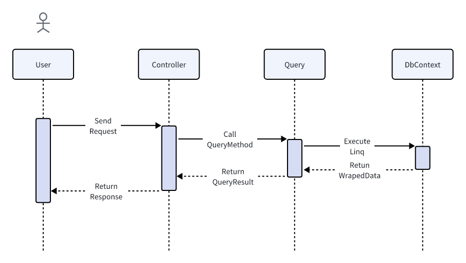

处理用户 Http 请求¶
框架采用命令查询职责分离 (即 CQRS) 的模式处理用户请求，因此对于用户的请求被划分为两类 Query 和 Command。两者处理的复杂度往往存在巨大的差异。**查询**由于不涉及数据变更，通常不对其进行抽象处理，在某些简单的场景中甚至可以直截了当的在 Controller 中注入并使用 DbContext 实现数据查询；**命令**往往伴随的复杂的业务逻辑和数据变更，因此需要更加谨慎的处理，命令的复杂度来自于不同业务模型之间隐含的关系以及对与数据一致性的要求，框架框架对命令单独抽象出一个接口 ICommand<T> 使用事件驱动处理 Command 中涉及的复杂的数据变更。以下是一些示例和说明。
用户 Query 请求¶
对于 Query 请求, 下列是一个最简单的实现查询的示例。 该示例中, ApplicationDbContext 被直接注入到了 Controller 中，并且直接使用 Linq 实现了数据查询。
// OrderController 订单相关 API
[ApiController]
[Route("order")]
public class OrderController
{
[HttpGet]
[Route("{id}")]
public async Task<OrderResp> Detail(
[FromQuery] OrderId orderId,
[FromServices] ApplicationDbContext dbContext
)
{
return await dbContext.Orders
.Where(order => order.Id == orderId)
.Select(order => new OrderResp(order.Id, order.OrderCode))
.FirstOrDefaultAsync();
}
}
在 Controller 中直接使用 DbContext 适用于简单并且追求快速实现的场景中，如果一个 Controller 中定义的大量的查询 API, Controller 中的代码会变得杂乱，Controller 的职责也变得模糊。更加推荐的做法是将所有的对于同个模型或实体的相关查询集中到一个类中，Controller 直接使用该类获取查询的数据，该类在框架中被定义为 Query, 它并不是强制的，但是会是代码更加清晰，也更方便相同查询逻辑的复用(关于查询的原则，后续会进一步说明。一般情况下， 查询往往是特定与某个场景的，查询复用的情况应当避免，因为复用会使得多个场景的逻辑交织在一起，后续难以维护，其中最重要的一个原则是**按需提供**)，示例代码如下。
// OrderController 订单相关 API
[ApiController]
[Route("order")]
public class OrderController
{
[HttpGet]
[Route("{id}")]
public async Task<OrderResp> Detail(
[FromQuery] OrderId orderId,
[FromServices] OrderQuery query
)
{
return await query.Detail(orderId: orderId);
}
}
// OrderQuery 使用主构造函数注入 DbContext
public class OrderQuery(ApplicationDbContext dbContext)
{
public async Task<OrderResp> Detail(OrderId orderId)
{
return await dbContext.Orders
.Where(order => order.Id == orderId)
.Select(order => new OrderResp(order.Id, order.OrderCode))
.FirstOrDefaultAsync();
}
}
上述代码将查询逻辑单独组织到 OrderQuery 中，并在 Controller 中直接使用，这是处理一个查询请求的典型用法。在框架中，查询的时序图如下所示：

对于更加复杂的情况，例如查询的结果涉及多个实体模型信息的组合，有两种处理方式：
- 使用多个相关的
Query对象获取查询到的数据，然后组装到请求响应中; - 修改模型，使模型本身能够 满足查询需求, 这往往涉及在模型中复制其他模型的属性或字段（有人会觉得这是一种冗余，但这往往是简化代码实现 DDD 领域隔离的关键）。
在实际情况中，更加推荐使用后者。有以下原因：
- 模型应当反应真实的需求，如果模型无法快速的实现需求，极有可能是模型设计的不合理;
- 也是为了简单，当模型能够满足需求时，查询的实现逻辑将水到渠成，顺畅自然;
- 模型之间的解耦，由于模型中包含其他模型属性的的复制, 相当于模型本身包含了另一个模型的快照，“快照” 对应的模型变更之前，查询获取的数据都是 快照的数据。两个模型的数据相互隔离，使得模型更加独立，避免了模型之间建立的**耦合关系**。
这可能会导致数据一致性的问题，例如，“快照” 对应的模型发生了数据变更，模型的快照数据也应当一同变更，数据同步需要付出额外的代价。但是这并不是查询需要考虑的问题，那是命令（Command）需要做的。以下是一个典型的例子, 通讯录模型：
// Person 模型
public class Person {
// 名称
public string Name {get; private set;} = string.Empty;
// 手机号
public string Phone {get; private set;} = string.Empty;
// 年龄
public int Age {get; privaet set;}
// 通讯录 (Name, Phone)
public Dictionary<string, string> AddressBook {get; private set;} = new();
}
每个人都有自己的名称和手机号，同时每个人也存有一份包含其他人信息的通讯录。这个模型是非常自然的，当我们需要呼叫某人，我们第一反应是在我们自己的通讯录中查询该人的手机号，然后呼叫。这份通讯录便是模型所反映的真实的需求, 当某人的手机号变更之后，其他人不知道他的手机号发生了变更，需要他主动通知所有人，然后其他人更新其通讯录中的信息。我们假设每个人都没有这一份通讯录，会发生什么呢？ 那么必然需要存在一个中心化的机构提供手机号查询服务，每当我们想要呼叫某人时，我们需要先询问该机构呼叫目标的手机号，然后呼叫。而该机构也会维护一个巨大的通讯录，并且付出高额的成本去保证通讯录的正确性。而一旦该机构出现问题，所有人都无法使用电话了, 根本原因是所有人都强依赖了该机构，也就是说，每个人都与该机构建立了耦合关系。这是一个在建模方面的简单例子，非常的浅显。在建模的时候，许多人会掉入到 “冗余” 的陷阱，认为某些字段或属性是冗余的，使模型偏离了实际的场景。
上面提到查询应当遵循一定的原则，现在对这些原则进行详细说明：
- 查询应当**场景化**，一个查询场景对应一个查询，避免复用;
- 查询应当**按需提供**，不提供该查询场景中无用的信息;
- 查询应当保证自身的**简单性**;
查询场景化，以及查询按需提供往往是保证查询简单的关键。而查询的简单是提高代码可维护型的关键。
那么场景化和按需提供是什么意思呢。这里说的场景是指用户所处的环境，按需提供则是只提供在该场景下需要的数据。许多人受到 Restful 风格的 API 的影响，设计的 API 往往背离了这两个原则。Restful 风格的 API 是面向资源的，这在资源相对稳定，不易发生变化的情况下是合适的。但在业务系统中，需求千变万化，Restful 风格的 API 是往往是不适用的。例如，Restful 风格的 API 倡导把所有数据当成资源返回给用户，由用户判断和筛选需要那些资源获取相应的信息。这使得一个资源需要应当大量的场景，不同场景往往携带不同的筛选条件以及数据要求，这些最终都会转化成查询请求中的参数，当新的需求查询不满足时，只能增加新的参数。久而久之，查询逻辑变得异常复杂，不可维护。因此，我们在业务系统中应当摒弃 Restful 风格的 API, 保持上述原则。
关于场景化，举一些例子:
- 业务系统中往往区分前台和后台，这便是两个典型的不同的场景，用户处于不同的环境，获取的信息往往也是不同的，因此应当设计不同的查询接口。
- 用户需要查看某类对象的列表，以及用户需要从某个对象的列表中选择一个对象，也是不同的场景，前者往往对于于分页查询，展示的数据往往是一个对象的 摘要，后者可能只需要对象的 Id 属性，应当设计不同的接口。
- 如果是涉及多个微服务组成的系统，其他服务查询信息，和前后台查询信息，也往往是不同的场景，应当设计不同的接口。
这些例子要求区分场景设计不同的接口，看似增加了工作量，实际上刚好相反，这样的设计能够大大减少工作量，提高开发效率。这是因为，区分场景使得实现查询非常简单，对于特定的场景，不需要考虑其他因素，查询往往是自然而然的。而当需求发生变化时，修改逻辑也只针对一个场景，也更加得心应手，方便测试。假设不是这样，多个场景糅合到一起，修改的不确定性将会随着时间指数上升，不仅不利于维护，也不利于测试，一个修改往往需要花费大量时间和精力在调试和测试上。
关于按需提供，这样不仅可以不保证数据的安全，也能减轻用户的负担。这里所指的用户往往是前端的开发人员，过多的信息往往会给用户造成迷惑，并且使得接口职责变得不清晰。
查询的简单性使得查询的成本变得非常的低，新增或废弃一个查询是十分容易的。